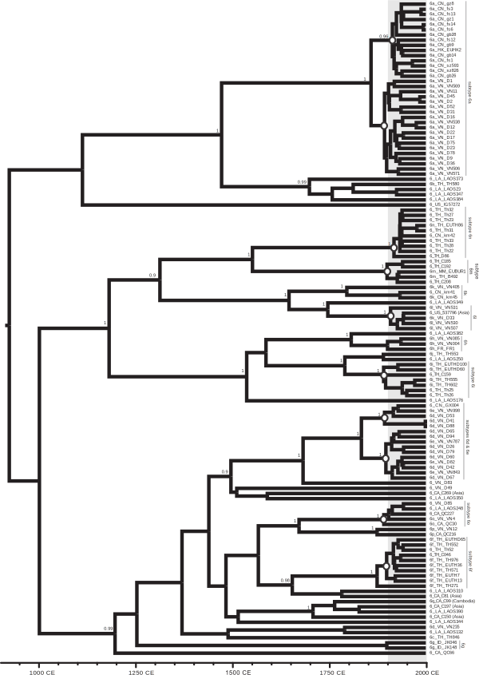
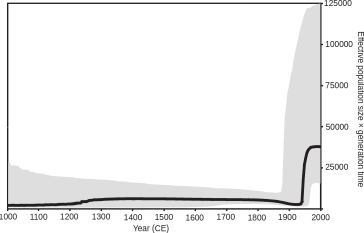
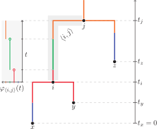
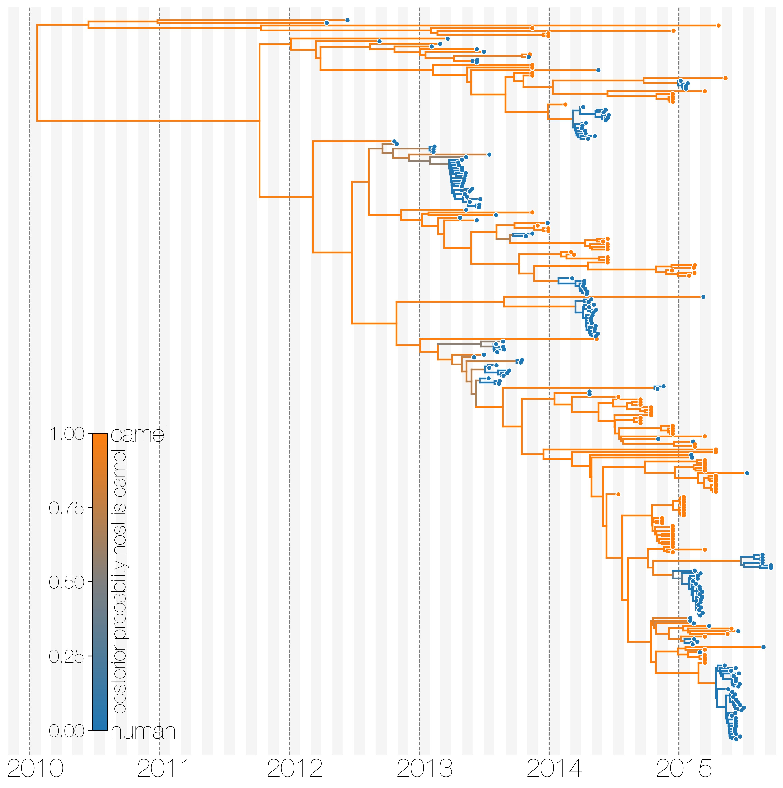
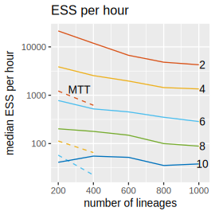
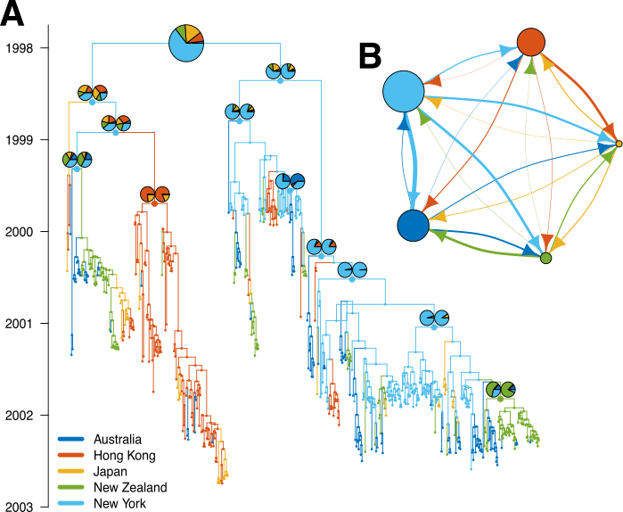

Inference of effective population sizes and migration rates using MASCOT
Taming the Beast 2018
Changes in e.g. the number of infected over time shapes phylogenetic trees

Volz et al., PloS Comp. Biology, 2013
Posterior probability
adapted from Plessis et al., Trends in microbiology, 2015
Population priors allow us to calculate the probability of a tree given a tree generating process and a set of parameters
- Birth-Death.
- Coalescent.
How the coalescent process generates trees
N=8


- Probability that 2 lineages share a common ancestor in the previous generation $=\frac{1}{N(=8)}$
Changes in population sizes are reflected in the shape of trees
The smaller a population, the more likely individuals are to coalesce.
Drummond et al., Trends in Ecology and Evolution, 2003
HCV phylogeny contains information about ancestral population sizes

Pybus et al., Journal of Virology, 2009
Phylodynamics: HCV in East-Asia
Phylodynamics allows to infer past population dynamics.

Pybus et al., Journal of Virology, 2009
Population structure violates the assumptions of classic phylodynamic models

Bedford et al., PLoS Pathogens, 2010
The structured coalescent allows to account for population structure


The structured coalescent is parameterised by effective population sizes and migration rates
http://popgen.sc.fsu.edu/Migrate/Blog/Entries/2013/3/22_forward-backward_migration_rates.html
The structured coalescent requires to know where lineages were in the past

Vaughan et al., Bioinformatics, 2014
The structured coalescent can be used to infer ancestral states in simple scenarios

Dudas et al., eLife, 2018
Integrating over every possible migration history drastically speeds up analysis

Müller et al., Bioinformatics, Accepted
Derivations: Müller et al., MBE, 2017
Speed up allows to consider more complex scenarios: H3N2

Müller et al., Bioinformatics, Accepted
Problem: The number of parameters grows quadratically with the number of locations
Use additional data source to inform parameters. For example:
- Population size and density of host populations.
- Movement data between different locations.
Use predictors to inform effective population sizes and migration rates by using a GLM:
2014 Sierra Leone Ebola outbreak
- Migration rate predictors: Distances between locations and origin/destination effects, such as population size at origin or destination .
- Ne predictors: Weekly case data, travel times to cities, population density, etc.
2014 Sierra Leone Ebola outbreak

Müller et al., BioRxiv, 2018
Tutorial: MASCOT
https://taming-the-beast.github.io/
Acknowledgement
- Tanja Stadler (ETH Zürich)
- David Rasmussen (North Carolina State)
- Gytis Dudas (Fred Hutch)